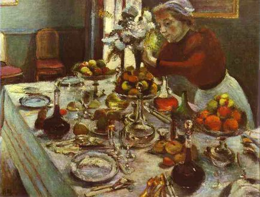

Henri Matisse,1869 - 1954,"Impressionism,Post-Impressionism",French,"Henri Émile Benoît Matisse (French: [ɑ̃ʁi emil bənwɑ matis]; 31 December 1869 – 3 November 1954) was a French artist, known for both his use of colour and his fluid and original draughtsmanship. He was a draughtsman, printmaker, and sculptor, but is known primarily as a painter.",http://en.wikipedia.org/wiki/Henri_Matisse,186
